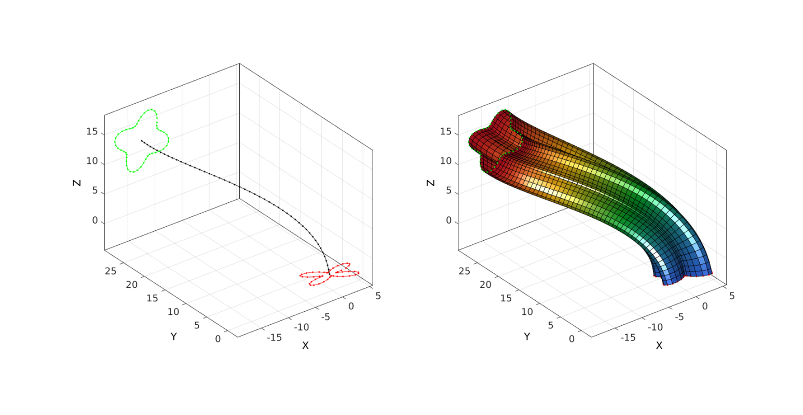
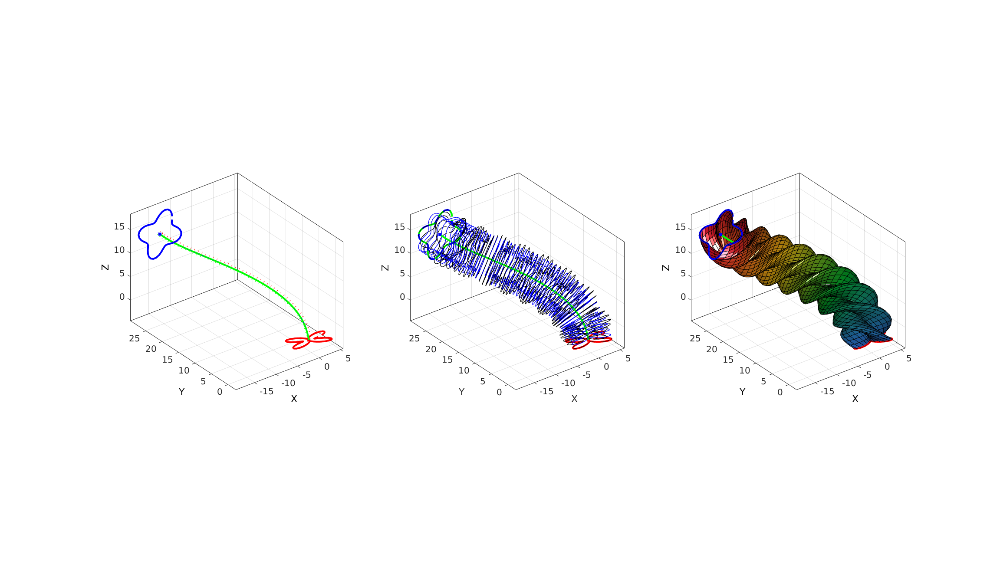
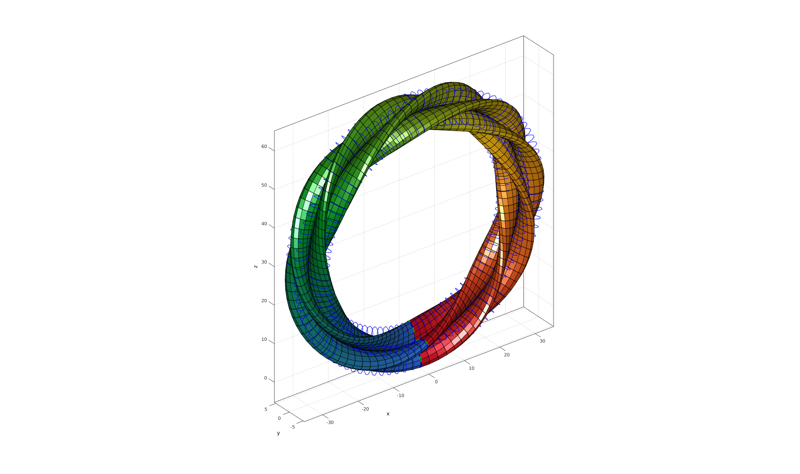

sweepLoft
Below is a demonstration of the features of the sweepLoft function
Contents
clear; close all; clc;
Syntax
[F,V,C]=sweepLoft(V1,V2,n1,n2,Vg,numSteps,numTwist,plotOn);
Description
The sweepLoft function creates a swept loft (as in CAD terminology for a shape formed by merging a set of sketches towards each other allong a given path or guide curve). The inputs to the function are the start and end sketchs (V1 and V2), the start and end normal directions (n1 and n2), and the guid curve (Vg). Optional additional inputs are: the number of steps for the loft feature (numSteps, same as number of points in guide curve if not provided), the number of twists (numTwists, default is zero) the shape undergoes around the guide curve, and finally plotOn (default is 0, i.e. off) which is a logic to turn on or off plotting within the function. The function outputs are patch data i.e. faces (F), the vertices (V) and face colors (C, denoting step in lofting process).
Examples
A sweep loft allong a guide curve
Creating sketches
ns=50; t=linspace(0,2*pi,ns); t=t(1:end-1); r=3+2.*sin(4*t); [x,y] = pol2cart(t,r); V1=[x(:) y(:) zeros(size(x(:)))]; E=[0.1*pi 0 0]; R1=euler2DCM(E); t=[1 2 -3]; V1=(V1*R1)+t; t=linspace(0,2*pi,ns); t=t(1:end-1); r=4+1.*sin(4*t); [x,y] = pol2cart(t,r); V2=[x(:) y(:) zeros(size(x(:)))]; E=[0 0.25*pi 0]; R2=euler2DCM(E); t=[-16 25 15]; V2=((V2*R2)+t);
Create a guide curve
numStepsCurve=50; %Number of steps for the curve p1=mean(V1,1); %First point n1=R1(3,:); %First direction vector p2=mean(V2,1); %End point n2=R2(3,:); %End direction vector csapsSmoothPar=0.99; %Cubic smoothening spline smoothening parameter f=0.05; [Vg]=sweepCurveSmooth(p1,p2,n1,n2,numStepsCurve,csapsSmoothPar,0.05);
Create a basic loft feature using default settings (no twist, same number of steps as number of points as in guide curve, plotting off)
[F,V,C]=sweepLoft(V1,V2,n1,n2,Vg);
Visualize loft feature
cFigure; subplot(1,2,1); hold on; plotV(Vg,'k.-'); plotV(V1,'r.-'); plotV(V2,'g.-'); axisGeom; subplot(1,2,2); hold on; plotV(Vg,'k.-'); plotV(V1,'r.-'); plotV(V2,'g.-'); gpatch(F,V,C,'k'); axisGeom; colormap(gjet(250)); camlight headlight drawnow;
A sweep loft allong a guide curve with twist
Create loft feature with twist
numTwist=2; %Number of additional twists of loft feature around guide curve numStepsSweep=50; %Number of steps for loft feature from sketch 1 to sketch 2 plotOn=1; %Turn on plotting to view lofting behaviour [F,V,C]=sweepLoft(V1,V2,n1,n2,Vg,numStepsSweep,numTwist,plotOn);
A ring shaped sweep loft
Creating sketches
ns=50; t=linspace(0,2*pi,ns); t=t(1:end-1); r=3+2.5.*sin(4*t); [x,y] = pol2cart(t,r); V1=[x(:) y(:) zeros(size(x(:)))]; E=[0 0.5*pi 0]; R1=euler2DCM(E); V1=(V1*R1); V2=V1;
Creating a ring shaped guide curve
numStepsCurve=100; p1=mean(V1,1); n1=R1(3,:); p2=mean(V2,1); n2=n1; t=linspace(-pi,pi,numStepsCurve); r=30; x=r*sin(t(:)); z=r*cos(t(:))+r; Vg=[x zeros(size(x)) z];
numTwist=2; %Number of additional twists of loft feature around guide curve numStepsSweep=numStepsCurve; %Number of steps for loft feature from sketch 1 to sketch 2 plotOn=1; %Turn on plotting to view lofting behaviour [F,V,C]=sweepLoft(V1,V2,n1,n2,Vg,numStepsSweep,numTwist,plotOn);

GIBBON www.gibboncode.org
Kevin Mattheus Moerman, gibbon.toolbox@gmail.com